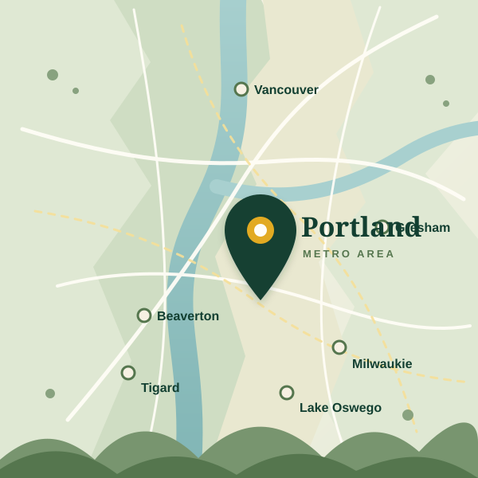

Groundskeeping
- Mowing
- Edging
- Weed Control
- Seasonal Cleanup
- Property Upkeep
Groundskeeping, landscape improvements, and ecological stewardship for apartment communities and commercial properties throughout the Portland metro area.


Featured Project
Portland, OR
Complete landscape renovation including planting, mulch, irrigation improvements, and ongoing maintenance.
View Project Before
Before After
AfterTell us about your property and how we can help.
Thank you. Your quote request has been received.
Proudly serving the Portland metro area.
Focused on safety and reliability.
Sustainable solutions for healthy ecosystems.
Responsive, dependable, and easy to work with.

After your request, Urban Yards can send estimates, invoices, and secure payment links through Square.